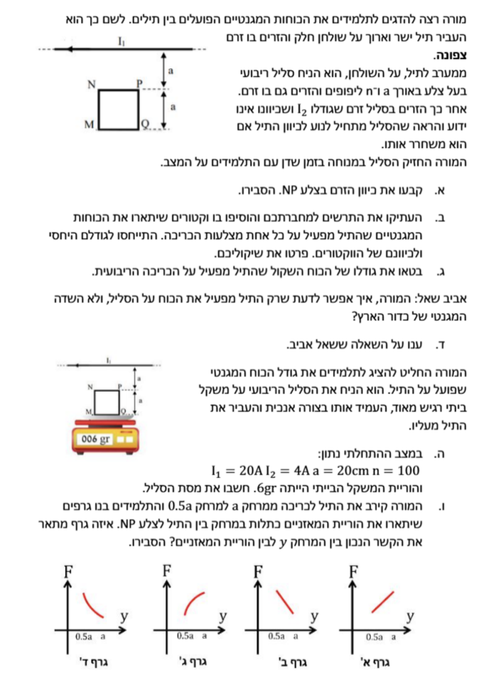

פתרון מודרך בפיזיקה - מגנטיות
שאלה 2 בתרגול מגנטיות יב 8/3
פתרון מלא ומודרך: צעד-אחר-צעד עם דגשים פדגוגיים, תרשימי כוחות וגרף
ver
vAUTO
|
auto

תמונת השאלה המקורית
לא נמצאה תמונה בשם question-image.png באותה תיקייה.
מה נתון: תיל ארוך נושא זרם \( I_1 \) שמאלה. תחתיו, במרחק \( a \), סליל ריבועי בעל \( n \) ליפופים וזרם \( I_2 \). נתון כי אם משחררים את הסליל, הוא מתחיל לנוע לכיוון התיל (כלומר, הכוח השקול עליו הוא כוח משיכה כלפי מעלה).
מה מחפשים: את כיוון הזרם בצלע העליונה הקרובה לתיל (צלע NP) והסבר לכך.
הערת מורה: חוק יד ימין וכוחות בין תילים
כדי לפתור שאלות כאלו, אנו משלבים שני שלבים:
1. מציאת כיוון השדה המגנטי שיוצר התיל העליון באזור הסליל (בעזרת כלל יד ימין לזרם ישר).
2. שימוש בידיעה שהכוח השקול מושך למעלה. מכיוון שהשדה המגנטי נחלש ככל שמתרחקים מהתיל (\( B \propto \frac{1}{r} \)), הצלע הקרובה ביותר (NP) מרגישה את הכוח החזק ביותר, ולכן היא זו ש"קובעת" את כיוון הכוח השקול. לכן, הכוח על צלע NP חייב להיות כוח משיכה כלפי מעלה.
הסבר ופתרון:
- התיל הארוך נושא זרם \( I_1 \) שמאלה. לפי כלל יד ימין (אגודל בכיוון הזרם, אצבעות מקיפות את התיל), השדה המגנטי \( \vec{B} \) שיוצר התיל מתחתיו (באזור הסליל) מכוון החוצה מהדף (\( \odot \)).
- מה לגבי הצלעות האנכיות (MN ו-PQ)? על שתי הצלעות הללו פועל גם כן כוח מגנטי מהתיל. עם זאת, מכיוון ששתיהן נמצאות באותם מרחקים בדיוק מהתיל הארוך (בכל גובה נתון), והזרם בהן זורם בכיוונים מנוגדים (באחת למעלה ובשנייה למטה), הכוחות עליהן שווים בגודלם ומנוגדים בכיוונם לחלוטין. לכן, הכוח השקול על שתי הצלעות הללו הוא אפס.
- מכאן נובע שהכוח השקול (והתנועה) נקבעים אך ורק על ידי ההפרש בין הכוחות על הצלעות האופקיות (NP העליונה ו-MQ התחתונה). הצלע העליונה (NP) קרובה יותר לתיל ולכן מרגישה כוח חזק יותר, והיא זו שמכתיבה את כיוון השקול כולו.
- מכיוון שהסליל נמשך אל התיל, הכוח המגנטי הפועל על צלע NP חייב להיות מכוון כלפי מעלה (לכיוון התיל).
- כעת נפעיל את כלל יד ימין לכוח על תיל נושא זרם: השדה (\( \vec{B} \)) החוצה מהדף, הכוח המבוקש (\( \vec{F} \)) כלפי מעלה. כדי שזה יתקיים, כיוון הזרם (\( I_2 \)) חייב להיות שמאלה.
- מכיוון שהקודקוד P נמצא מימין לקודקוד N, זרם שמאלה משמעותו זרם הזורם מ-P אל N.
תשובה סופית לסעיף א': כיוון הזרם בצלע NP הוא מ-P ל-N (שמאלה).
מה נתון: כיוון הזרם בצלע העליונה מצאנו (מ-P ל-N). לכן כיוון הזרם בכל הסליל הוא נגד כיוון השעון.
מה מחפשים: להוסיף וקטורי כוח מגנטי על כל אחת מארבע צלעות הסליל, תוך התייחסות לגודלם ולכיוונם היחסי.
\( F = IlB\sin\alpha \)
\( B = \mu_0 \frac{I}{2\pi r} \)
הסבר בניית התרשים (FBD):
אנו נפעיל את הנוסחאות מדף הנוסחאות עבור כל צלע:
- צלע NP: זרם שמאלה, שדה החוצה מהדף \(\rightarrow\) כוח למעלה (\( F_{NP} \)). זו הצלע הקרובה ביותר לתיל (\( r=a \)), ולכן השדה \( B \) שם הוא החזק ביותר. וקטור הכוח יהיה הארוך ביותר.
- צלע MQ: זרם ימינה (הפוך מ-NP), שדה החוצה מהדף \(\rightarrow\) כוח למטה (\( F_{MQ} \)). המרחק כפול (\( r=2a \)), לכן השדה קטן פי 2, והכוח יהיה קצר יותר פי 2 מ-\( F_{NP} \).
- צלע MN: זרם למטה, שדה החוצה מהדף \(\rightarrow\) כוח שמאלה (\( F_{MN} \)).
- צלע PQ: זרם למעלה, שדה החוצה מהדף \(\rightarrow\) כוח ימינה (\( F_{PQ} \)).
סיכום תרשים חזותי:
הכוחות על הצלעות הצדדיות (\( F_{MN} \) ו-\( F_{PQ} \)) שווים בגודלם ומנוגדים בכיוונם מטעמי סימטריה, ולכן הם מבטלים זה את זה לחלוטין. הכוח כלפי מעלה גדול יותר מהכוח כלפי מטה, ולכן יש כוח שקול שמושך מעלה.
מה נתון: אורך צלע \( a \), מספר ליפופים \( n \), זרמים \( I_1, I_2 \), המרחק לצלע העליונה \( a \) והמרחק לצלע התחתונה \( a+a=2a \).
מה מחפשים: ביטוי אלגברי לגודל הכוח המגנטי השקול \( \Sigma F \) שהתיל מפעיל על הסליל.
\(\frac{F}{l} = \frac{\mu_0}{2\pi}\frac{I_1 I_2}{d}\)
הערת מורה: שימוש בנוסחת כוח בין תילים מתוך דף הנוסחאות
דף הנוסחאות נותן לנו את "גודל הכוח ליחידת אורך בין שני תילים ארוכים מקבילים". מכיוון שהתיל הארוך יוצר שדה המאונך לכל אורך צלע הסליל שלנו, נוכל לבודד את הכוח \( F \) על ידי הכפלת המשוואה באורך הצלע \( l=a \) ובמספר הליפופים \( n \). ננתח כל גוף (צלע) בנפרד ואז נחבר אותם למערכת.
1. נבטא את כוח המשיכה על הצלע העליונה NP (מרחק \( d = a \)):
$$ F_{NP} = n \cdot a \cdot \frac{\mu_0 I_1 I_2}{2\pi a} = n \frac{\mu_0 I_1 I_2}{2\pi} $$
2. נבטא את כוח הדחייה על הצלע התחתונה MQ (מרחק \( d = 2a \)):
$$ F_{MQ} = n \cdot a \cdot \frac{\mu_0 I_1 I_2}{2\pi (2a)} = n \frac{\mu_0 I_1 I_2}{4\pi} $$
3. נחשב את הכוח השקול על הסליל (זכרו שהכוחות האופקיים מתבטלים):
$$ \Sigma F = F_{NP} - F_{MQ} $$
$$ \Sigma F = n \frac{\mu_0 I_1 I_2}{2\pi} - n \frac{\mu_0 I_1 I_2}{4\pi} = n \frac{\mu_0 I_1 I_2}{4\pi} $$
תשובה סופית: \( \Sigma F = n \frac{\mu_0 I_1 I_2}{4\pi} \) (והכיוון הוא כלפי מעלה).
השאלה של אביב: איך אפשר לדעת שרק התיל מפעיל את הכוח על הסליל, ולא השדה המגנטי של כדור הארץ?
הערת מורה: שדה מגנטי אחיד לעומת שדה משתנה
השדה המגנטי של כדור הארץ באזור קטן (כמו שולחן המעבדה) נחשב לשדה מגנטי אחיד (קבוע בגודלו ובכיוונו בכל נקודה במרחב של הניסוי). לעומת זאת, שדה של תיל נושא זרם משתנה במרחב (\( B \propto 1/r \)). להבדל הזה יש משמעות פיזיקלית קריטית על לולאות זרם.
תשובה לאביב:
כאשר סליל (לולאת זרם סגורה) נמצא בתוך שדה מגנטי אחיד (כמו השדה של כדור הארץ), הכוח המגנטי הפועל על כל צלע של הסליל מבוטל בדיוק על ידי הכוח הפועל על הצלע הנגדית לה.
למשל, הכוח על צלע ימין יבטל את הכוח על צלע שמאל, והכוח על הצלע העליונה יבטל את הכוח על התחתונה, כי השדה זהה בכל המקומות.
מסקנה: הכוח השקול המגנטי הפועל על לולאה סגורה בשדה מגנטי אחיד הוא תמיד אפס!
לכן, השדה של כדור הארץ עשוי לייצר מומנט כוח (שיגרום לסליל לרצות להסתובב), אך הוא לעולם לא ייצור כוח דחיפה או משיכה כולל שירחיק או יקרב את הסליל. תנועת הסליל לכיוון התיל מעידה בהכרח על שדה שאיננו אחיד, וזהו השדה שנוצר מהתיל המגנטי עצמו.
מה נתון עכשיו:
הסליל מונח מאוזן על משקל רגיש. התיל מוחזק במאונך מעליו במרחק \( a = 20\text{ cm} = 0.2\text{ m} \).
הזרמים: \( I_1 = 20\text{ A} \) , \( I_2 = 4\text{ A} \).
מספר הליפופים: \( n = 100 \).
קריאת המשקל (המייצגת את הכוח הנורמלי במונחי מסה): \( 6\text{ gr} = 0.006\text{ kg} \).
מה מחפשים: את המסה האמיתית של הסליל, \( m \).
\( \Sigma\vec{F} = m\vec{a} \)
\( W = mg \)
💡 פינת העמקה: איך באמת עובד משקל? ולמה 6 גרם שווים ל-0.06 ניוטון?
טעות נפוצה היא לחשוב שמשקל (מאזניים) מודד מסה (קילוגרמים או גרמים). האמת היא שהמשקל יודע למדוד רק כוח!
בתוך המשקל יש חיישן לחץ. כשאנחנו מניחים עליו גוף, המשקל דוחף את הגוף חזרה כלפי מעלה בעזרת כוח נורמלי (\( N \)) כדי שלא ייפול. את הכוח הזה המשקל מודד בניוטונים.
אז למה על המסך אנחנו רואים גרמים?
יצרן המשקל "תכנת" אותו לתרגם את הכוח למסה, מתוך הנחה (שנכונה בדרך כלל) שהגוף פשוט מונח עליו ללא כוחות נוספים. היצרן אמר למשקל: "קח את הכוח שאתה מרגיש (N) וחלק אותו בתאוצת הכובד (\( g = 10 \text{ m/s}^2 \))".
לדוגמה: אם המשקל מרגיש כוח של \( 10 \text{ N} \), הוא מחלק ב-10, מבין שמונחת עליו מסה של \( 1 \text{ kg} \), ומציג "1 ק"ג" על המסך.
איך זה עוזר לנו לפתור את השאלה?
בשאלות פיזיקה, קריאת המשקל איננה המסה האמיתית אלא "המסה המדומה" שמחושבת מתוך הכוח הנורמלי שהמשקל מפעיל באותו רגע.
אם המשקל מראה לנו 6 גרם (שהם \( 0.006 \text{ kg} \)), אנחנו צריכים לעשות את הפעולה ההפוכה כדי לגלות איזה כוח באמת מפעיל המשקל כרגע. נכפיל את הקריאה בחזרה ב-\( g \):
$$ N = \text{Reading (in kg)} \cdot g = 0.006\text{ kg} \cdot 10\text{ m/s}^2 = 0.06\text{ N} $$
כלומר: המספר שעל הצג מלמד אותנו שהכוח הנורמלי (N) שהמשקל מפעיל כרגע כלפי מעלה הוא בדיוק \( 0.06 \text{ N} \). את הנתון הזה נציב במשוואת הכוחות שלנו!
שלב 1: חישוב גודל הכוח המגנטי השקול (\( F_B \))
נציב את הנתונים החדשים בביטוי שפיתחנו בסעיף ג':
$$ F_B = n \frac{\mu_0 I_1 I_2}{4\pi} = 100 \cdot \frac{(4\pi \cdot 10^{-7}) \cdot 20 \cdot 4}{4\pi} $$
$$ F_B = 100 \cdot 10^{-7} \cdot 80 = 8000 \cdot 10^{-7} = 8 \cdot 10^{-4} \text{ N} $$
כוח זה פועל כלפי מעלה (מושך את הסליל אל התיל).
שלב 2: משוואת כוחות (חוק שני של ניוטון לגוף במנוחה)
נבחר ציר חיובי כלפי מעלה. הגוף במנוחה, לכן \( \Sigma F_y = 0 \):
$$ N + F_B - mg = 0 \implies N = mg - F_B $$
כפי שהסברנו לעיל, מהקריאה של המאזניים גילינו שהכוח הנורמלי המופעל הוא בדיוק:
$$ N = 0.06\text{ N} $$
נציב הכל במשוואה כדי לבודד את מבוקשנו, מסת הסליל \( m \):
$$ 0.06 = m \cdot 10 - 8 \cdot 10^{-4} $$
$$ 10m = 0.06 + 0.0008 = 0.0608 $$
$$ m = \frac{0.0608}{10} = 0.00608\text{ kg} = 6.08\text{ gr} $$
תשובה סופית: מסת הסליל היא 6.08 גרם. השפעת הכוח המגנטי הפחיתה את הקריאה במאזניים ב-0.08 גרם.
מה נתון: המורה מקרב את התיל עד למרחק של \( 0.5a \). המרחק מהתיל לצלע NP מיוצג על ידי המשתנה \( y \).
מה מחפשים: לקבוע איזה מהגרפים (א', ב', ג', ד') מתאר נכונה את קריאת המאזניים כתלות במרחק \( y \), ולהסביר.
הערת מורה: ניתוח פונקציה פיזיקלית
כדי לדעת איזה גרף נכון, לא מספיק "לנחש" על סמך אינטואיציה. עלינו להרכיב את הפונקציה המתמטית של קריאת המשקל (\( N/g \)) כתלות במשתנה \( y \). נבדוק שני דברים עיקריים:
1. מגמה (שיפוע): האם הקריאה עולה או יורדת כשמקרבים את התיל?
2. צורה (קעירות): האם התלות היא ליניארית (קו ישר) או לא ליניארית (עקומה)?
1. בניית הפונקציה:
ראינו בסעיף הקודם שקריאת המשקל פרופורציונית לכוח הנורמלי \( N = mg - F_B(y) \).
נרשום את הביטוי לכוח המגנטי כתלות במרחק \( y \). המרחק לצלע העליונה הוא \( y \), והמרחק לצלע התחתונה הוא תמיד גדול ב-\( a \), כלומר \( y+a \).
$$ F_B(y) = F_{NP} - F_{MQ} = C \cdot \frac{1}{y} - C \cdot \frac{1}{y+a} $$
(כאשר \( C \) הוא קבוע המכיל את הזרמים ומספר הליפופים)
2. בדיקת המגמה:
כאשר המרחק \( y \) קטן (מקרבים את התיל מ-\( a \) ל-\( 0.5a \)), הכוח המגנטי \( F_B \) גדל משמעותית (מכיוון שהוא מושפע מ- \( 1/y \)).
מכיוון שהכוח המגנטי מושך את הסליל כלפי מעלה (מקטין את הלחץ על המאזניים), ככל ש-\( y \) קטן יותר, הכוח הנורמלי \( N \) (וקריאת המשקל) קטנים.
במילים אחרות: אם נסתכל על ציר \( y \) מימין לשמאל (מ-\( a \) אל \( 0.5a \)), הגרף צריך לרדת. משמעות הדבר היא שזהו גרף עולה (פונקציה עולה ככל ש-y גדל).
מסקנה: אנו פוסלים את גרפים ב' ו-ד' (שבהם הקריאה קטנה ככל שהמרחק גדל).
3. בדיקת הצורה:
הפונקציה שלנו איננה פונקציה קווית של \( y \), כי המשתנה נמצא במכנה (\( 1/y \)). לכן הגרף חייב להיות עקום ולא קו ישר.
מסקנה: אנו פוסלים את גרף א' שהוא קו ישר.
התשובה הנכונה היא: גרף ג'
גרף ג' מראה עלייה לא ליניארית (פונקציה קעורה כלפי מטה). ככל שמתרחקים (y גדל), השפעת השדה המגנטי נחלשת במהירות, וקריאת המשקל מתקרבת למסת הגוף האמיתית (\( mg \)). בקרבה קיצונית (y שואף ל-0), הכוח שואף לאינסוף והגרף היה יורד בחדות, מה שמתאים לצורה של גרף ג'.
הדמיה ממוחשבת להוכחת התשובה (בונוס פדגוגי):